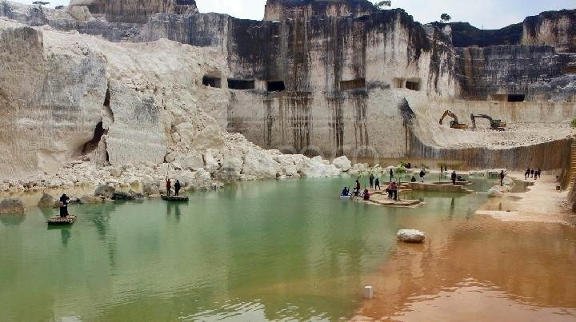
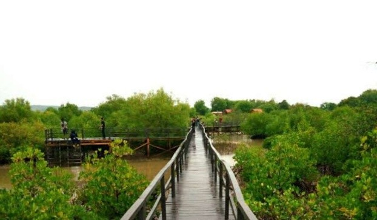
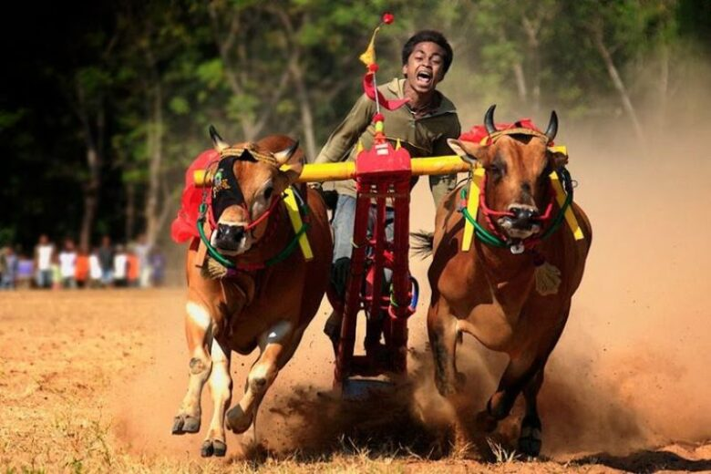

Studi Mini Madura
Pariwisata Madura yang berhasil dikelola masyarakat.




Web yang menunjukkan “kalau warga jadi tuan rumah, hasilnya seperti apa”
Alur sebab–akibat pariwisata di Yogyakarta dan praktik alternatif berbasis masyarakat di Madura.
Perbandingan pengelolaan pariwisata berbasis investor dan berbasis masyarakat.
Investor dominan adalah pola pengelolaan pariwisata di mana kendali utama berada di tangan pemilik modal, baik perusahaan besar, pengusaha luar daerah, maupun pihak eksternal. Investor menentukan arah pembangunan, jenis atraksi, hingga pembagian keuntungan.
Dalam model ini, masyarakat lokal umumnya hanya berperan sebagai tenaga kerja atau pelengkap, sementara keputusan strategis dan keuntungan terbesar lebih banyak dinikmati oleh investor.
| Penerima Manfaat | Bentuk Pendapatan | Porsi | Keterangan |
|---|---|---|---|
| Investor / Pengembang | Penjualan vila, kavling, sewa aset, capital gain | Tinggi (±60–70%) | Keuntungan terpusat pada pemilik modal |
| Pemerintah Daerah | Pajak hotel, restoran, retribusi | Sedang (±20–25%) | Masuk PAD, tidak langsung ke warga |
| Masyarakat Lokal | Upah kerja, jasa informal | Rendah (±5–15%) | Tanpa kepemilikan aset |
Pada kasus Jogja Eco Wisata, distribusi pendapatan menunjukkan pola investor dominan. Skema utama yang dijalankan adalah penjualan unit vila/kavling sebagai produk investasi, di mana keuntungan terbesar berada pada pengembang dan pemilik modal.
Masyarakat lokal tidak memiliki kepemilikan aset wisata, serta tidak terlibat dalam rantai nilai utama pariwisata. Peran warga sekitar terbatas pada pekerjaan pendukung dengan upah tetap, sehingga manfaat ekonomi tidak terdistribusi secara adil ke komunitas lokal. Ketika proyek mengalami stagnasi, masyarakat juga tidak memiliki posisi tawar untuk mengamankan manfaat ekonomi jangka panjang.
Kasus Jogja Eco Wisata memunculkan konflik sosial dan ketegangan struktural, terutama antara investor, pengembang, dan pemerintah daerah. Konflik ini dipicu oleh:
Masyarakat lokal berada pada posisi pasif dan rentan, karena tidak dilibatkan sejak tahap perencanaan. Situasi ini memperlihatkan bagaimana pariwisata berbasis investor tidak hanya berisiko secara ekonomi, tetapi juga mengganggu stabilitas sosial dan kepercayaan publik di wilayah destinasi.
Dalam Jogja Eco Wisata, budaya dan identitas lokal tidak menjadi fondasi utama pengembangan destinasi, melainkan sekadar elemen pendukung narasi “eco” dan “wisata alam”. Tidak terdapat mekanisme yang menempatkan masyarakat sebagai penjaga nilai budaya atau penentu representasi budaya lokal. Akibatnya, keberlanjutan budaya bersifat lemah dan tidak terjamin, karena orientasi utama proyek adalah properti dan investasi, bukan pelestarian nilai sosial-budaya. Model ini berpotensi menjauhkan pariwisata dari konteks budaya lokal Yogyakarta dan memperkuat praktik komodifikasi ruang tanpa akar komunitas.
Masyarakat dominan adalah pola pengelolaan pariwisata di mana warga lokal menjadi aktor utama dalam perencanaan, pengelolaan, dan pengambilan keputusan. Pariwisata dikembangkan berdasarkan nilai, kebutuhan, dan kesepakatan komunitas, sering melalui musyawarah, kelembagaan desa, atau kelompok sadar wisata. Dalam model ini, masyarakat tidak hanya terlibat, tetapi memiliki rasa kepemilikan dan kontrol, sehingga manfaat ekonomi, sosial, dan budaya lebih banyak kembali ke komunitas lokal.
| Penerima Manfaat | Bentuk Pendapatan | Porsi | Keterangan |
|---|---|---|---|
| Masyarakat Lokal | Tiket, jasa wisata, UMKM, homestay | Tinggi (±55–65%) | Dikelola melalui BUMDes |
| Pemerintah Desa | Retribusi, kontribusi BUMDes | Sedang (±20–25%) | Kembali ke pembangunan desa |
| Pihak Eksternal | Pendampingan, promosi | Rendah (±10–15%) | Tidak menguasai aset |
Pada pariwisata berbasis masyarakat seperti Somber Rajeh, distribusi pendapatan cenderung lebih adil karena masyarakat lokal berperan langsung sebagai pengelola utama. Pendapatan dari tiket masuk, jasa wisata, dan usaha pendukung dikelola melalui BUMDes dan kelompok warga, sehingga manfaat ekonomi tidak terpusat pada satu pihak saja. Warga tidak hanya menerima upah kerja, tetapi juga memperoleh penghasilan dari kepemilikan dan pengelolaan usaha wisata. Pola ini membuat pendapatan pariwisata berputar di desa dan memperkuat ekonomi lokal secara berkelanjutan.
Dari penelitian tentang pengembangan Somber Rajeh:
Keberlanjutan budaya dalam pengelolaan wisata Somber Rajeh relatif terjaga karena masyarakat menjadi aktor utama dalam pengambilan keputusan. Nilai gotong royong, kearifan lokal, dan identitas budaya Madura tidak diposisikan sebagai komoditas semata, melainkan sebagai bagian dari kehidupan sosial yang menyatu dengan aktivitas wisata. Karena masyarakat terlibat langsung, pengembangan destinasi cenderung selaras dengan norma dan tradisi setempat, sehingga pariwisata tidak menghilangkan identitas lokal, tetapi justru memperkuat rasa memiliki dan tanggung jawab warga terhadap budaya mereka sendiri.
Pariwisata Madura yang berhasil dikelola masyarakat.
Simulasi penerapan model pariwisata berbasis masyarakat pada destinasi ikonik Yogyakarta.
Candi Prambanan merupakan salah satu destinasi pariwisata paling terkenal dan menjadi ikon budaya Yogyakarta yang menarik jutaan wisatawan setiap tahunnya, baik domestik maupun mancanegara. Kawasan wisata ini dikelola secara profesional oleh PT Taman Wisata Candi Borobudur, Prambanan, dan Ratu Boko (BUMN), yang mengatur operasional, fasilitas wisata, serta sistem komersialisasi destinasi. Dalam model pengelolaan ini, peran masyarakat lokal di sekitar kawasan relatif terbatas dan tidak terlibat dalam pengambilan keputusan strategis, sehingga Candi Prambanan merepresentasikan pola pariwisata dengan investor dominan, di mana kendali utama berada pada institusi besar, bukan komunitas lokal.
Akibatnya, manfaat ekonomi pariwisata tidak terdistribusi secara merata kepada masyarakat sekitar, karena warga lebih banyak berperan sebagai pekerja informal atau pelengkap dalam rantai pariwisata. Masyarakat tidak memiliki akses kepemilikan, kontrol, maupun ruang untuk menentukan arah pengembangan destinasi, sehingga legitimasi sosial pariwisata menjadi lemah. Kondisi ini berpotensi menciptakan jarak antara destinasi wisata dan komunitas lokal, serta menempatkan budaya dan ruang hidup masyarakat sebagai objek komodifikasi tanpa keterlibatan bermakna dari pemilik budaya itu sendiri.
Jika Candi Prambanan Dikembangkan dengan Model Masyarakat Dominan (Belajar dari Madura)
Kepemilikan, legitimasi, dan keberlanjutan.
Apakah masyarakat lokal benar-benar punya peran dan kuasa? Bukan cuma jadi penonton atau pekerja, tapi ikut menentukan arah, mengelola, dan menikmati hasil pariwisata di wilayahnya sendiri.
Pariwisata dianggap “sah” oleh warga. Artinya, masyarakat menerima, mendukung, dan merasa pariwisata itu bagian dari hidup mereka, bukan sesuatu yang dipaksakan dari luar.
Pariwisata bisa jalan terus tanpa merusak budaya, lingkungan, dan kehidupan sosial. Bukan ramai sesaat lalu menyisakan masalah di kemudian hari.